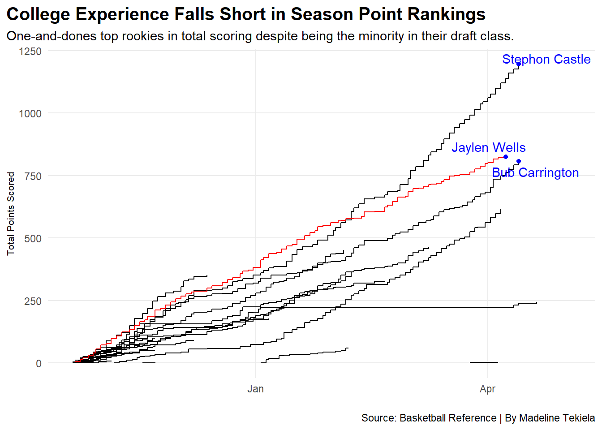

In 2005, the National Basketball Association (NBA) established a rule prohibiting players from signing with the league until they are at least nineteen years old or one year removed from the graduation of their high school class, a rule commonly referred to as the “one-and-done” policy. The 2006 draft class was the first to be affected by this change.
Since its implementation, many notable NBA players have entered the draft after just one year of college and gone on to have successful careers. However, in recent years, the introduction of Name, Image, and Likeness (NIL) rights has encouraged more college athletes to remain at their universities for multiple years. Prominent men’s college basketball stars are increasingly choosing to delay their entry into the draft in order to develop their skills, contribute further to their programs, and, in some cases, continue a lucrative college career.
In the most recent NBA Draft, just over half of the first 58 picks had played more than one year of college basketball. The remaining 28 selections consisted of international players, G-League prospects, or athletes who entered the draft after only one year of college.
Transitioning into a professional league can be challenging for any athlete, which raises an important question: does spending extra time in college help ease that transition? Many players are eager to declare for the draft after a strong college season, hoping to capitalize on their high draft stock and enter the draft when they feel the time is right.
Code
players2025 <-load_nba_player_box(2025)playerseasonpts<- players2025 |>group_by(athlete_display_name) |>arrange(game_date) |>mutate(season_points=sum(points, na.rm =TRUE) )lookingatplayers <-bind_rows(college, oneanddone)playersbox<- players2025 |>filter(athlete_display_name %in% lookingatplayers$player) |>group_by(athlete_display_name) |>arrange(game_date) |>mutate(season_points=cumsum(points) ) |>ungroup()wells <- playersbox |>filter(athlete_display_name =="Jaylen Wells")kneckt <- playersbox |>filter(athlete_display_name =="Dalton Knecht")filipowski <- playersbox |>filter(athlete_display_name =="Kyle Filipowski")ware <- playersbox |>filter(athlete_display_name =="Kel'el Ware")dasilva <- playersbox |>filter(athlete_display_name =="Tristan da Silva")shead <- playersbox |>filter(athlete_display_name =="Jamal Shead")topseason <- playersbox |>group_by(athlete_display_name) |>filter(game_date ==max(game_date)) |>ungroup() |>filter(season_points >500)ggplot() +geom_step(data=playersbox, aes(x=game_date, y=season_points, group=athlete_display_name)) +geom_step(data=wells, aes(x=game_date, y=season_points, group=athlete_display_name), color="red") +geom_point(data=topseason, aes(x=game_date, y=season_points), color="blue") +geom_text_repel(data=topseason, aes(x=game_date, y=season_points, label=athlete_display_name), color="blue") +labs(x=" ", y="Total Points Scored", title="College Experience Falls Short in Season Point Rankings", subtitle="One-and-dones top rookies in total scoring despite being the minority in their draft class.", caption="Source: Basketball Reference | By Madeline Tekiela" ) +theme_minimal() +theme(plot.title =element_text(size =15, face ="bold"),axis.title =element_text(size =8), plot.subtitle =element_text(size=11), panel.grid.minor =element_blank(),plot.title.position ="plot" )

Out of the top three scorers in the 2024 draft class, two of the three were one-and-done players. In fact, Stephon Castle not only tops his class in points but was also recently voted the NBA’s rookie of the year. The University of Connecticut alum is doing it all at the age of 20 and with only one year of experience with his prior college team.
However, success in college does not always translate to success in the NBA. Entering the draft after only one year raises some important questions. How will limited college experience affect playing time? And how will young players adjust when competing against seasoned professionals on loaded rosters?
Code
draft24clean |>filter (mp_2 >23) |>select(player,mp_2, pts_2, ast_2) |>gt() |>cols_label(player ="Player",pts_2 ="Points",ast_2 ="Assists",mp_2 ="Minutes" ) |>tab_header(title ="Who Is Getting More Playing Time?",subtitle ="In the top 10 of points per game one-and-dones players out number college, international, and G-league players.") |>tab_style(style =cell_text(color ="black", weight ="bold", align ="left"),locations =cells_title("title") ) |>tab_style(style =cell_text(color ="black", align ="left"),locations =cells_title("subtitle") ) |>tab_source_note(source_note =md("**By:** Maddie Tekiela | **Source:** Sports Reference") ) |>tab_style(locations =cells_column_labels(columns =everything()),style =list(cell_borders(sides ="bottom", weight =px(3)),cell_text(weight ="bold", size=12) ) ) |>opt_row_striping() |>tab_style(style =list(cell_fill(color ="darkblue"),cell_text(color ="white") ),locations =cells_body(rows = player =="Kyshawn George") ) |>tab_style(style =list(cell_fill(color ="darkblue"),cell_text(color ="white") ),locations =cells_body(rows = player =="Bub Carrington") ) |>tab_style(style =list(cell_fill(color ="darkblue"),cell_text(color ="white") ),locations =cells_body(rows = player =="Stephon Castle") ) |>tab_style(style =list(cell_fill(color ="darkblue"),cell_text(color ="white") ),locations =cells_body(rows = player =="Jared McCain") ) |>tab_style(style =list(cell_fill(color ="darkblue"),cell_text(color ="white") ),locations =cells_body(rows = player =="Isaiah Collier") ) |>tab_style(style =list(cell_fill(color ="darkblue"),cell_text(color ="white") ),locations =cells_body(rows = player =="Yves Missi") )
Who Is Getting More Playing Time?
In the top 10 of points per game one-and-dones players out number college, international, and G-league players.
Player
Minutes
Points
Assists
Zaccharie Risacher
24.6
12.6
1.2
Alex Sarr
27.1
13.0
2.4
Stephon Castle
26.7
14.7
4.1
Bub Carrington
30.0
9.8
4.4
Jared McCain
25.7
15.3
2.6
Yves Missi
26.8
9.1
1.4
Kyshawn George
26.5
8.7
2.5
Isaiah Collier
25.9
8.7
6.3
Jaylen Wells
25.9
10.4
1.7
KJ Simpson
23.4
7.8
3.1
By: Maddie Tekiela | Source: Sports Reference
Six of the top ten rookies in the 2024 NBA season in terms of average minutes played were one-and-done players. This demonstrates that they’re not just entering the draft to get their foot in the door, they are making an immediate impact.
The introduction of NIL has drastically changed the landscape of collegiate athletics and continues to influence decisions at the professional level. While the number of one-and-done players has declined in recent years, their presence and performance in the NBA remain significant. Even as more athletes choose to stay in college longer, those who leave early continue to prove they belong in the league.